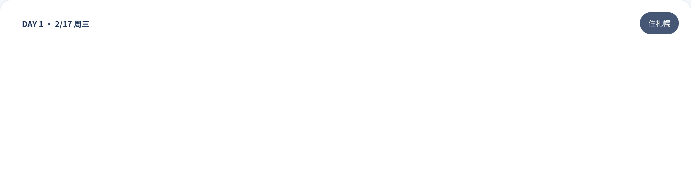
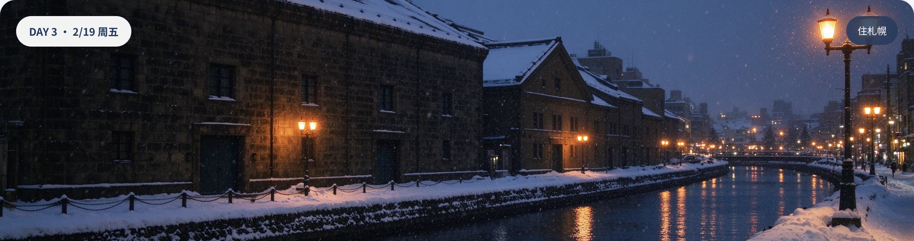
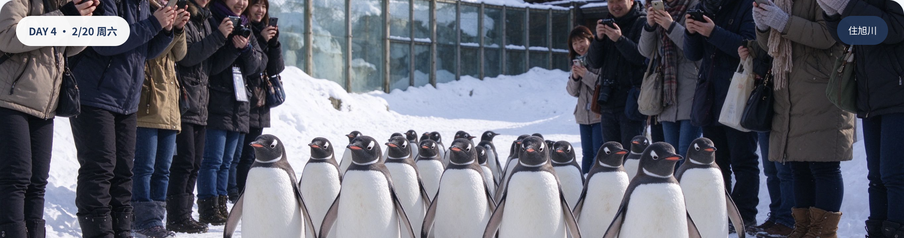
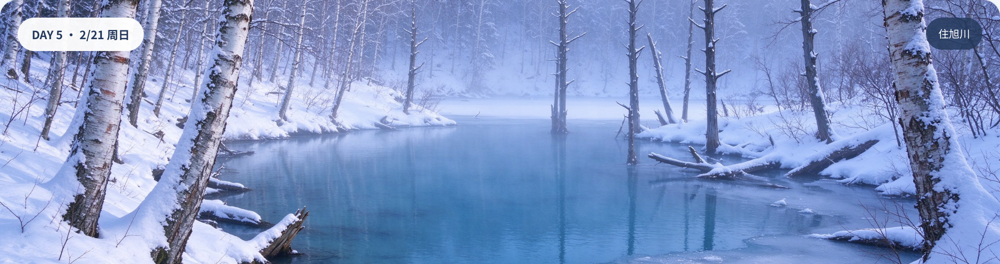
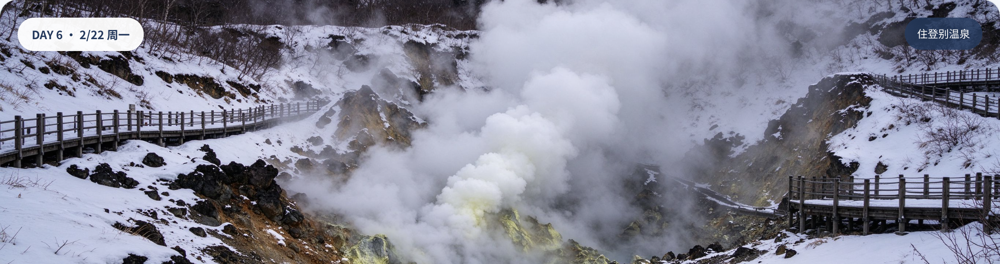
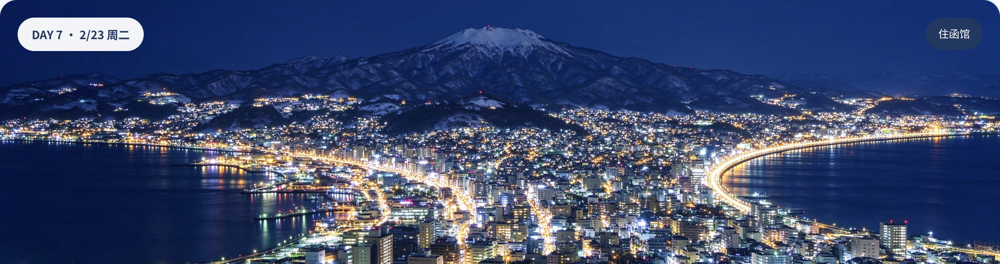

上海浦东经东京羽田中转直飞札幌新千岁，ANA 全服务航空。两人一行，追雪、泡汤、看企鹅、百万夜景、吃海鲜——这是一份为你们定制的不赶路路线。
去程在东京羽田 T3 落地后需转 T2 搭乘国内线（NH61），转机时间 4 小时 45 分，时间充裕可在羽田吃个拉面或逛逛免税店。回程羽田转机 4 小时 30 分。
以札幌为圆心，先北上旭川、美瑛，再南下登别、洞爷、函馆，最后回札幌——不走回头路。
每个城市一张简图，蓝点=景点、橙点=餐厅、深蓝点=酒店、灰方块=车站。位置为相对示意，实际步行距离以 Google Maps 为准。
北海道 2 月是隆冬，积雪约 1 米。两人出行建议叠穿+防水鞋，拍照时脱掉外套、拍完立刻穿上。
| 城市 | 白天 | 夜间 | 体感 |
|---|---|---|---|
| 札幌 / 小樽 | 0.1℃ | -6.6℃ | 积雪 95cm+ |
| 旭川 / 美瑛 | -2℃ | -12℃ | 内陆干冷 -20℃ |
| 登别 / 洞爷 | 1℃ | -5℃ | 温泉区雾气重 |
| 函馆 | 2℃ | -3℃ | 海峡风大 |
每天标出小红书打卡机位（橙色块）和实用 Tip（蓝色块）。节奏松紧搭配，赶路日电车不超过 3 小时。

DAY 1 · 2/17 周三住札幌
DAY 3 · 2/19 周五住札幌
DAY 4 · 2/20 周六住旭川
DAY 5 · 2/21 周日住旭川
DAY 6 · 2/22 周一住登别温泉
DAY 7 · 2/23 周二住函馆按携程 / 去哪儿 2 月非周末双床房均价估算，人民币按 1 日元 ≈ 0.05 元。强烈建议提前 2-3 个月订可免费取消的方案。
D4-D8 共 5 天，Pass 覆盖所有特急（カムイ、北斗）。D9 函馆→札幌单程就要 ¥9,000，Pass 直接回本。
味の時計台、えびそば一幻、GARAKU 汤咖喱
札幌 Beer Garden / 旭川松尾成吉思汗
小樽本店现切最好吃
海胆+三文鱼籽+扇贝
冬季限定，水母造型超可爱
现捞现切，一碗 ¥1500
函馆灵魂，中华鸡肉串烧汉堡
地狱谷硫磺蒸出来的
按城市整理，地址都是 Google Maps 直接可搜的招牌名。人均为两人一顿的参考价（人民币）。
| 城市 | 餐厅 | 地址 / 位置 | 招牌菜 | 人均 |
|---|---|---|---|---|
| 札幌 | 味の時計台 本店 | 中央区南4条西6丁目，薄野步行 3 分钟 | 味噌拉面（¥950） | ¥50 |
| えびそば一幻 本店 | 中央区南6条西9丁目，薄野 | 虾味噌拉面（浓厚虾汤） | ¥60 | |
| GARAKU 汤咖喱 | 中央区南2条西2丁目，大通步行 5 分钟 | 汤咖喱+煎鸡肉 | ¥80 | |
| 札幌啤酒园 | 东区北11条东7丁目，地铁东区役所前 | 成吉思汗烤肉+啤酒 | ¥200 | |
| 小樽 | LeTAO 本店 | 小樽市堺町通，三角市场旁 | 双层芝士蛋糕（现切） | ¥40 |
| 北菓楼 本馆 | 小樽市堺町16-15 | 梦不思议年轮蛋糕 | ¥30 | |
| 三角市场 まるかつ | 小樽市稻穂2-20-1 | 海鲜三色丼（海胆+鲑鱼籽+扇贝） | ¥150 | |
| 旭川 | 青葉 本店 | 旭川市一条通8丁目，拉面村 | 传统酱油拉面 | ¥55 |
| ラーメン村 一砂 | 旭川市富士见1条，JR 旭川站搭巴士 15 分 | 鱼介豚骨拉面 | ¥60 | |
| 松尾成吉思汗 本店 | 旭川市二条通9丁目 | 成吉思汗烤羊肉 | ¥150 | |
| 美瑛 | 大野商店 | 美瑛町本街，美瑛站步行 5 分 | 美瑛牛咖喱饭 | ¥70 |
| 登别 | 第一滝本馆 自助餐 | 登别温泉町55，旅馆晚餐含 | 蟹腿+海鲜自助 | 含住宿 |
| 函馆 | 函馆朝市 うにむら | 函馆市若松町9-15，JR 函馆站步行 1 分 | 活イカ踊り+海胆丼 | ¥150 |
| 幸运小丑 本店 | 函馆市千代崎町18-15 | 中华鸡肉串烧汉堡 | ¥50 | |
| ラッキーピエロ ベイエリア本店 | 函馆市丰川町12-6，La Vista 旁 | 芝士汉堡+薯条 | ¥60 | |
| La Vista 早餐自助 | 函馆市丰川町12-6，旅馆早餐含 | DIY 海鲜丼+汤咖喱 | 含住宿 |
| 项目 | 说明 | 两人合计 |
|---|---|---|
| ANA 往返机票 | 经羽田中转，含 23kg×2 托运 | ¥5,000-7,000 |
| JR Pass 5 日券 ×2 | D4-D8 覆盖长途特急 | ¥1,900 |
| 市内交通 / 巴士 | 地铁、美瑛号、缆车等 | ¥800 |
| 住宿 10 晚 | 札幌 5 + 旭川 2 + 登别 1 + 函馆 2 | ¥10,000-13,000 |
| 餐饮 11 天 | 含 1 顿登别会席、1 顿 La Vista 早餐 | ¥5,000 |
| 景点门票 | 动物园、函馆山、青池点灯等 | ¥1,200 |
| 伴手礼 / 药妆 | 白色恋人、Royce、药妆 | ¥3,000 |
| 签证 / 保险 / 流量卡 | 单次旅游签证+流量卡×2 | ¥1,200 |
| 双人合计 | 约 ¥28,000-31,000 | |
人均约 ¥14,000-15,500。ANA 机票价格浮动大，提前 4-6 个月订最便宜。